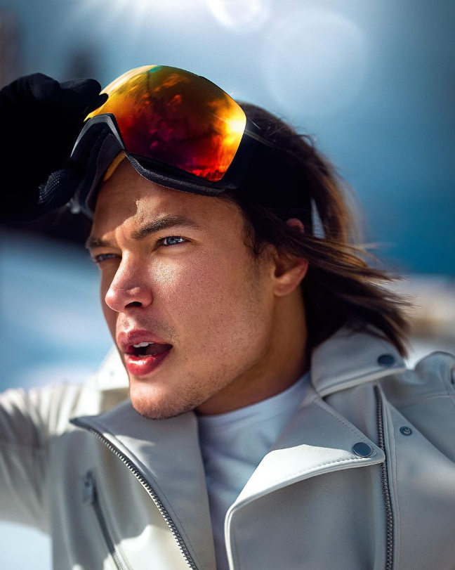
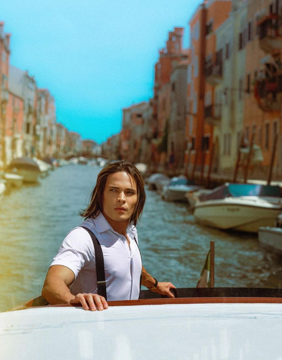

Thiago Finch leva um estilo de vida que define como um Outlier, com uma visão de mundo fora do modelo convencional.


Ele sempre priorizou a qualidade de vida e há anos cumpre seu expediente nos lugares mais incríveis do mundo, exibindo cenários com as mais exuberantes paisagens em suas redes sociais, muitas vezes acompanhado de jovens e bonitas mulheres.
Desprendendo-se dos estereótipos e dos modelos de negócios tradicionais, Thiago sempre chamou a atenção de seus seguidores por afirmar que é possível ganhar dinheiro viajando o mundo com total liberdade, através do marketing digital.
Sendo assumidamente um fã do cinema e das artes audiovisuais, Finch descidiu unir essa sua paixão com o seu negócio. A partir de 2018 ele começou a documentar, de maneira cinematográfica, suas viagens e dia a dia. Na maior parte das suas viagens, as imagens foram captadas pelo Dudu Heluany, amigo, fotógrafo e produtor audiovisual de Finch.
Alguns Bordões de Thiago Finch
“Os lançamentos venderam muito pois todo o marketing foi feito através das técnicas de cinema com a exponencialidade do digital, sendo um produto digital com um curso de vídeo aulas”, afirma Thiago Finch."
Sua principal frase é: "O dinheiro vem até mim em quantidades cada vez maiores, de diversas fontes e continuas bases, e comigo fica para construção da minha riqueza."
"Não torço pelo seu fracasso, apenas para o meu sucesso ser maior que o seu, bem vindo ao mundo competitivo."
"Os clientes compram de mim todos os dias e repetidas vezes, trazendo muito dinheiro, para a construção da minha grande e valiosa riqueza."